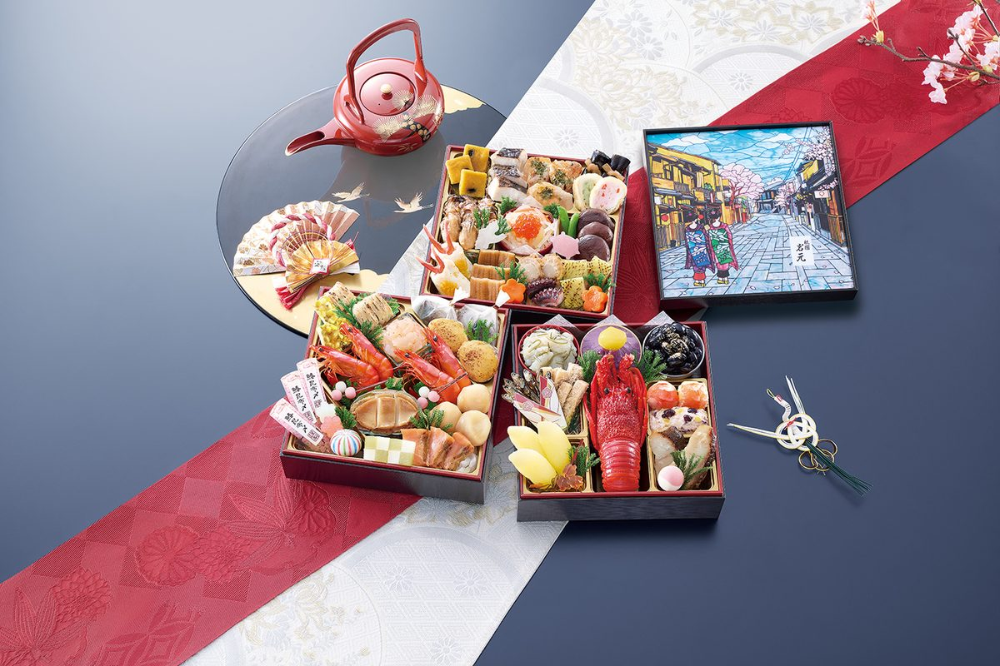

おせち 解凍 方法｜冷蔵庫で何時間？失敗しない手順

結論：冷凍おせちは冷蔵庫で丸1日（24時間）かけて解凍します。12月31日に食べるなら、12月30日の朝に冷蔵庫へ移すのが安心です。
※ リンク先は広告主の公式サイトです（アフィリエイトリンク）
なぜ冷蔵庫解凍なの？
常温や電子レンジで急いで解凍すると、食材の水分が急に抜けて、味や食感が損なわれます。時間をかけてゆっくり解凍することで、煮物の味がなじみ、焼き物もパサつきにくくなります。
解凍の手順
- 前日（12月30日）の朝：重箱のまま冷凍から冷蔵庫へ移す
- 当日の午前：冷蔵庫内で状態を確認。まだ硬ければ数時間追加する
- 食べる30分前：重箱を冷蔵庫から出し、余分な水分を軽く拭き取る
- 盛り付け：祝い箸を添えて、三段目から順に並べる
よくある失敗と対策
| 失敗 | 原因 | 対策 |
|---|---|---|
| 中心が凍ったまま | 解凍時間が不足 | 前日ではなく、2日前から冷蔵庫へ |
| 味がぼやける | 解凍中に水分が出た | 冷蔵庫でゆっくり解凍し、水気を拭く |
| 重箱が結露でべたつく | 常温に長時間置いた | 食べる直前に出す |
おせちの選び方（段数・総重量・早割）は 料亭おせちの選び方ガイド、早割の日程は おせち早割2026 にまとめています。
早割価格を公式サイトで確認する →※ リンク先は広告主の公式サイトです（アフィリエイトリンク）
早割価格を公式サイトで確認する →※ リンク先は広告主の公式サイトです（アフィリエイトリンク）
解凍前に準備しておくこと
おせちは解凍する前に、食べる日と冷蔵庫の空きスペースを決めておくとスムーズです。三段重の場合、横に並べられるスペースがなければ、段ごとに重ねて置いても問題ありません。
- 食べる日を決める：12月31日なら12月30日の朝に冷蔵庫へ移す
- 冷蔵庫のスペースを確認：重箱の幅と高さを測っておく
- 解凍後の受け皿を用意：水滴が出る場合に備えて皿やトレイを敷く
解凍後の日持ちと保存
解凍したおせちは、できるだけ早めに食べ切るのが基本です。残った場合は清潔な容器に移して冷蔵保存し、できるだけ当日〜翌日中に食べ切るようにしましょう。再冷凍は食感が劣りやすいためおすすめしません。
盛り付けのコツ
一段目から順に 開けると すると、冷蔵庫出しの時間が短く済みます。食べる直前に重箱のふたを開け、祝い箸を添えるだけで、見た目の華やかさが増します。
よくある質問
- 解凍に失敗したらどうなる？
- 身が水っぽくなったり、味がぼやけたりします。時間をかけて冷蔵庫で解凍すれば、多くの失敗は防げます。
- 冷蔵庫に入れる場所がない場合は？
- 段ごとに分けて重ねて置くか、食べる日が近いものから順に解凍するとスペースを節約できます。
- 解凍したおせちは翌日でも大丈夫？
- 清潔な容器に移して冷蔵保存し、当日〜翌日中に食べ切るのが安心です。
まとめ
おせちの解凍は「前日の朝に冷蔵庫へ」これだけです。あとは当日に水気を拭いて盛り付けるだけで、味も食感も保てます。